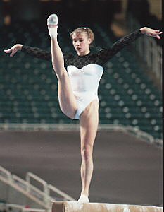

Svetlana Boginskaya (USSR/BLR)
1989 World AA Champion
1989 & 1990
European AA Champion

Medal Total
- Olympic Games: 3 Gold, 1
Silver, 1 Bronze
- World Championships: 5
Gold, 3 Silver, 1 Bronze
- World Cup: 1 Gold, 1
Silver, 1 Bronze
- European Championships: 9
Gold, 1 Silver
Svetlana was born on February 9, 1973 in
Minsk. Her coach was Lyubov Miromanova, who used to coach Ludmila Savina
(2nd at the 1975 Champions All). Boginskaya had a long and illustrious
career, starting with a win at the 1986 Jr. European Championships, later
becoming European and World AA champion, and winning medals at the 1988 and 1992
Olympics.
After the 1992 Olympics, she retired and took part in
exhibitions and clinics. But Boginskaya decided to return to competition
and moved to Houston, TX to train under Bela Karolyi. She was 16th AA at
the 1995 World Championships and a remarkable 2nd AA at the 1996 European
Championships! She and teammate Elena Piskun led
their Belarus team to a 6th place finish at the 1996 Olympics.
Svetlana
currently lives in Houston and is married to William Yee. They have a daughter,
Ania Julietta, who was born July 1999, and a son, Brandon, who was born November 2003. She owns a
sportswear company and coaches (at gymnastics camps in the summer and privately
throughout the year).
Competition Results
- 1982
Spordilekht Newspaper Competition: 1st AA, 1st FX
- 1983
Jr. GDR-USSR Dual Meet: 2nd Team, 9th AA, 2nd B, 3rd FX
1984
- Jr. Friendship Tournament (Druzhba): 1st Team, 4th AA, 1st B
- 1985
- Hungarian International Champs: 1st AA, 1st B, 2nd UB, 3rd
FX
- International Junior Champs: 1st AA, 1st V,
1st UB, 1st FX, 3rd B
Jr. Friendship Tournament (Druzhba): 1st Team, 11th AA
- USSR-GDR (Jr.) Dual Meet: 1st Team, 2nd AA
- 1986
- Jr. European Championships: 1st AA, 1st B, 2nd V, 2nd UB
Jr. Friendship Tournament (Druzhba): 1st Team, 1st AA, 1st UB, 2nd V,
2nd B
Riga International: 3rd AA, 1st V, 1st B, 4th UB
- 1987
- Jr. Friendship Tournament (Druzhba): 2nd Team, 2nd AA,
1st V, 1st UB, 1st B, 1st FX
- Riga International: 1st AA
- USA-USSR Dual Meet: 2nd AA
- USSR Cup: 6th AA, 3rd V, 4th UB, 6th FX
- World Championships: 2nd Team, 3rd B
- 1988
- Chunichi Cup: 2nd AA, 1st FX, 2nd V, 3rd UB, 3rd B
- DTB Cup: 2nd AA, 1st V, 1st UB, 2nd FX, 4th B
- Moscow News International: 2nd AA, 2nd UB,
2nd B
- Olympic Games: 1st Team, 3rd AA, 1st V, 2nd
FX
- USA-USSR Dual Meet: 1st Team, 1st AA
USSR Championships: 5th AA
- USSR Cup: 2nd AA, 2nd UB, 3rd V, 4th B
- 1989
- European Championships: 1st AA, 1st V, 1st FX,
4th UB, 4th B
- Moscow News International: 1st AA, 1st B,
1st FX, 2nd UB, 3rd V
USSR Championships: 9th AA
- World Championships: 1st Team, 1st AA,
1st FX, 8th UB
- World Sports Fair: 1st Team, 1st AA, 1st V, 1st B
- 1990
- Blume Memorial: 1st AA
- Chunichi Cup: 1st AA, 1st V, 1st B, 1st FX
- DTB Cup: 8th AA, 2nd V, 3rd UB, 4th B
- European Championships: 1st AA, 1st V, 1st UB, 1st
B, 1st FX
- French International: 1st AA, 1st V
- Goodwill Games: 1st Team, 2nd AA, 1st FX, 3rd B
- Tokyo Cup: 1st V, 1st FX
- World Cup: 2nd AA, 1st FX, 3rd V, 4th UB,
4th B
- 1991
- Blume Memorial: 1st AA, 1st V
- USSR Championships: 5th AA
- World Championships: 1st Team, 2nd
AA, 1st
B, 5th V, 7th FX
- 1992
- CIS Championships: 8th AA, 4th B
- DTB Cup: 1st AA, 1st UB, 2nd B, 4th FX
- European Championships: 5th AA, 1st B, 4th
UB, 8th V
- Gander Memorial: 1st AA
- Olympic Games: 1st Team,
5th AA, 4th V, 5th B
- Swiss Cup: 1st Team
- World Championships: 2nd V, 6th B
- 1995
- USA-BLR-CHN Tri-Meet: 2nd Team, 4th AA
- Pre-Olympics: 18th AA (2 events only)
- World Championships: 8th Team, 16th AA
- 1996
- American Cup: 1st V, 1st UB, 1st B, 2nd AA
- European Championships: 4th team, 2nd AA,
4th B, 6th V, 6th UB, 6th FX
- Three-on-Three International Championships: 1st Team
- ITA-BLR-ROM-RUS Meet: 3rd AA
- Olympic Games: 6th Team, 14th AA, 5th V
- This page was last updated on August 3, 2026.
© Gymn Forum